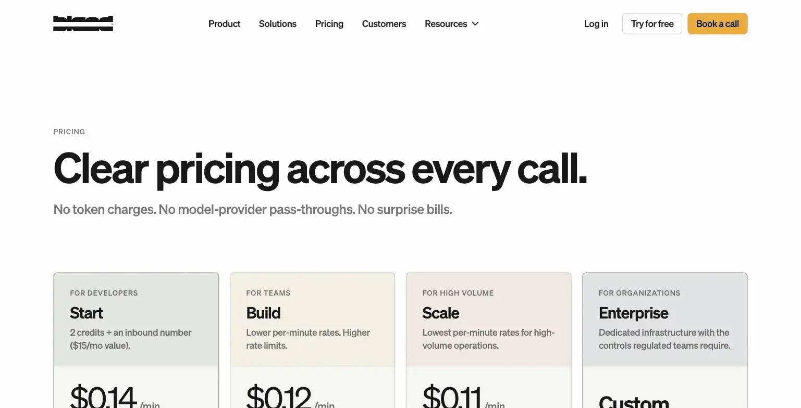
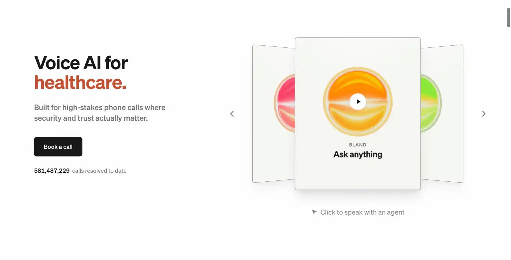

Bland AI
The horn billed by the minute. So, technically, did the bard's small talk.
Bland AI provides programmable AI voice agents that make and take calls, relevant if part of the business is phone-based sales or support. Pricing is entirely usage-based: $0.14/minute with no platform fee on the Start tier, dropping to $0.11/minute on Scale with a $499/month platform fee. The site's verdict is powerful and genuinely enterprise-capable technology, but the usage-based model and setup complexity make it a poor fit for a solo operator without meaningful, predictable call volume.
Bland AI runs programmable AI phone agents billed per minute, which means every call your AI makes is quietly costing you money in the background, like a very polite taxi meter.
- Value for price3.5/10
- Capability8.5/10
- Ease of use4.5/10
- Trial safety4.5/10

Bland AI builds custom voice agents that can make outbound calls or answer inbound ones, following a defined script and logic while sounding conversational rather than robotic, aimed at high-stakes, high-volume phone workflows like appointment scheduling, lead qualification, or customer support lines.

Bland AI markets itself explicitly toward high-stakes phone calls, healthcare, security-sensitive industries, where reliability and trust matter as much as the conversational quality of the AI voice, which shows in the platform's emphasis on infrastructure and controls over consumer-friendly simplicity.
Example from bland.ai. Not independently tested by Solos Gems.Pricing breakdown
- Start ($0.14/min): No platform fee, no credit card required to begin, 10 concurrent calls, 100 calls/day, 1 voice clone
- Build ($0.12/min, $299/mo platform fee): 50 concurrent calls, 2,000 calls/day, 5 voice clones
- Scale ($0.11/min, $499/mo platform fee): 100 concurrent calls, 5,000 calls/day, 15 voice clones, lowest per-minute rate
- Enterprise (custom): Dedicated infrastructure, on-prem/VPC options, forward-deployed engineering support
Why this rarely makes sense for a true solo operator
Bland AI's pricing model, and its platform fees on Build and Scale, are built for businesses running hundreds or thousands of calls a month, where the per-minute rate reduction justifies the fixed monthly cost. A solo operator fielding occasional sales or support calls will find the Start tier's per-minute cost adds up unpredictably without ever generating enough volume to justify moving to a platform-fee tier for the lower rate, and the setup complexity of building a reliable voice agent is real, not a five-minute configuration.
Pros
- Genuinely capable, enterprise-grade voice AI technology, used in high-stakes industries
- Start tier has no platform fee or credit card required to begin testing
- Per-minute rate drops meaningfully at higher volume tiers
Cons
- Usage-based pricing makes monthly costs unpredictable for irregular call volume
- Platform fees on Build and Scale only pay off at real, sustained call volume
- High setup complexity, not a quick plug-and-play configuration
Common questions
Is Bland AI worth it for occasional use?
No. It's usage-based enterprise technology priced for real call volume, $0.14/minute with no platform fee, or a lower per-minute rate plus a $499/month platform fee. Without predictable, meaningful call volume to spread that cost across, it doesn't pay for itself.
How complicated is it to set up?
More than a plug-and-play tool. Bland AI requires real configuration work to build call flows that sound natural and handle edge cases, budget setup time before expecting it to run unattended.
Who should actually use Bland AI?
Businesses with steady, forecastable phone call volume, appointment reminders, order confirmations, screening calls, where the per-minute or platform-fee math clearly pencils out against the time saved. A solo operator fielding occasional calls will pay for capacity they don't use.